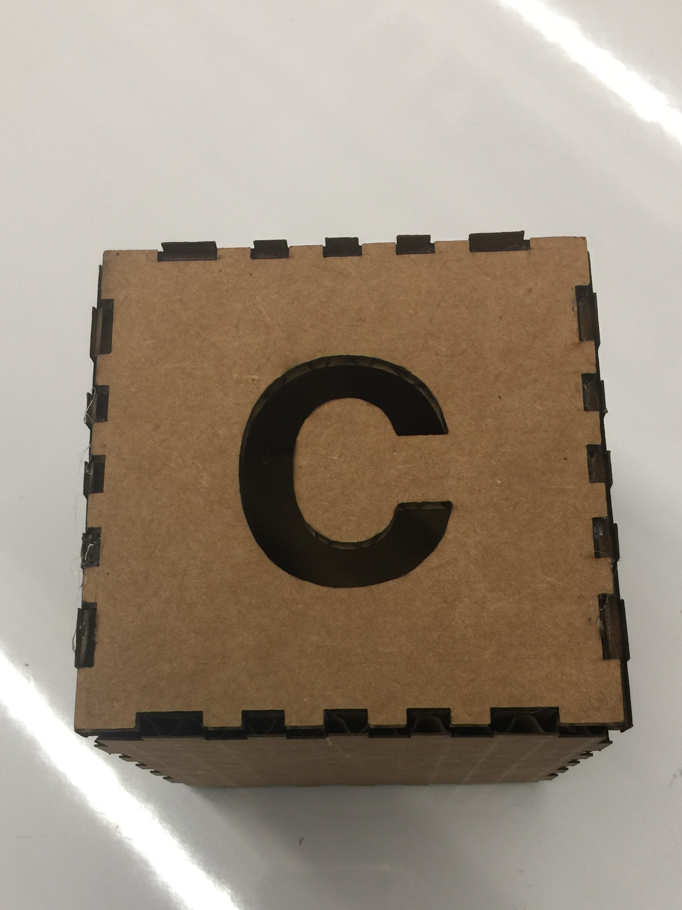
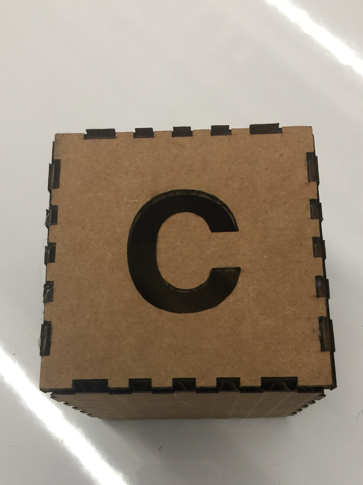
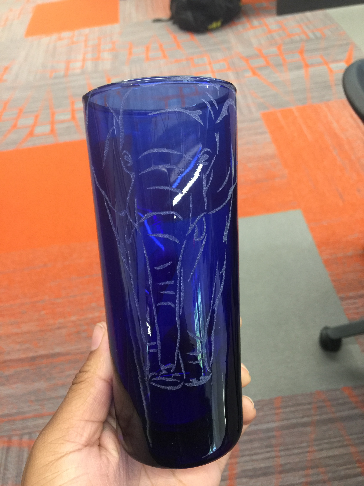
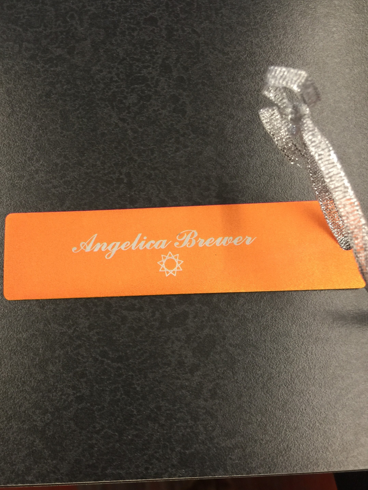

The first task of this week was to create a puzzle. I had to make puzzle peices that were 12x12 to match the cardboard. Then I had to put mmy blank cardboard into the printer so it could print my picture before using the laser cutter to create my puzle. I made a small mistake during the laser cutting portion. I measured out the length of the cardboard instead of the photo itsself so I have some white blank space, but its still easy to put the puzzle together.


The fitkit was really hard because to get the peices to stay together, the cardboard had to be measured.The diffculty was using CorelDraw to make the slits in the shapes big or small enough to aactual work. The actual making of the shapes was the easy part because the this point I had been using the laser cutter almost every class.
 

splash

shahahha
jordan
lallaal